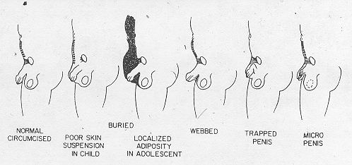
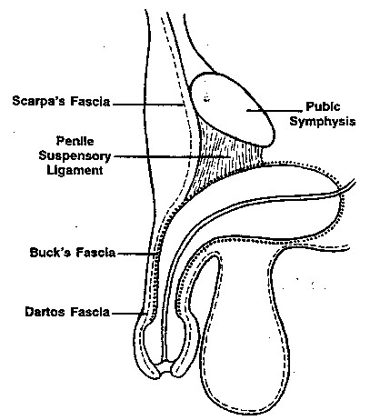
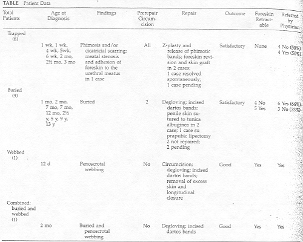
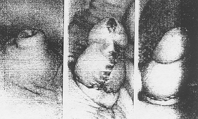
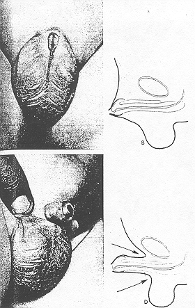
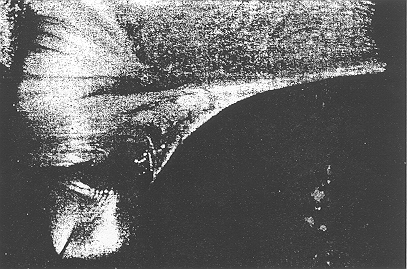

The Inconspicuous Penis
Paul S. Bergeson, MD; Robert J. Hopkin,
MD; Robert B. Bailey, MD;
Leigh C. McGill, MD; and Janice C. Piatt, MD
ABSTRACT. Objective. To describe the etiology and management of the group of abnormalities referred to as the inconspicuous penis.
Design. Analysis of 19 cases seen over a period of 2 years by chart review.
Setting. Children's hospital in a major metropolitan area.
Patients. Nineteen boys referred to two pediatric urologists over a period of two years with penises that appeared abnormally small, but on palpation and measurement were found to have normal shaft with a normal stretched length. Diagnoses included were buried penis, webbed penis, and trapped penis. Patient’s ages ranged from one week to 13 years.
Findings. There were eight patients (42%) with trapped penis, and all were complications of circumcision. (age 1 week to 7 months.) Of nine (47%) patients with buried penis, two had been circumcised prior to diagnosis. One (5%) had webbed penis and one (5%) had combined buried and webbed penis.
Intervention. Six trapped penises were surgically repaired, and two resolved spontaneously. Five patients with buried penis had surgical repair, and two are being followed up for probable repair at age 9 to 12 months. Two were not repaired because of medical conditions or parental concerns. The webbed penis was surgically repaired as was the combined buried and webbed penis. The repairs were all successful and had no complications.
Conclusions. Inconspicuous penis encompasses a group of conditions in which the penis appears small but the shaft can be normal or abnormal in size. Circumcision is contraindicated in these patients until they have been evaluated by a urologist. Further study is needed to determine the natural history of these disorders and to better define which patients will benefit from surgical intervention and at what age. Pediatrics 1993; 92:794-799; inconspicuous penis.
Inconspicuous penis is a term used in referring to a phallus that is or only appears to be small. Seven urologic entities that fall under this term have been described.1 These conditions are poor penile suspension, buried penis, webbed penis, trapped penis, concealed penis,2 diminutive penis,1 and micropenis (five of these are shown in figure 1). Proper treatment is dependent on accurately diagnosing which entity is present.
|  Fig 1. Entities conprising inconspicious peins. Used with permission from Maizels et al.1 |
Although the inconspicuous penis is well described in the urologic literature over the past 25 years failed to reveal a reference regarding the inconspicuous penis or any of the seven entities (except micropenis) that make up this condition. It is important, however, for pediatricians to be aware of this group of disorders for three reasons: first, circumcision is certainly contraindicated in some3; second, the abnormal appearance of the external male genitalia may be a source of psychologic trauma for children.4-6; and third, some cases may be associated with sexual dysfunction,5 pain, and/or abnormalities of the urinary stream.1 These problems may be prevented if the children are referred to a skilled urologist for appropriate surgical reconstruction.
|  Fig 2. Anatomic structures relevant to the inconspicious penis. |
A brief review of the anatomy in the genital area is helpful in understanding the inconspicuous penis and methods of surgical repair. Scarpa's fascia is a membranous fascial sheet composed of elastic tissue which covers the anterior abdominal wall subc utaneously. It extends inferiorly over the external inguinal ring and into the penis and scrotum with the superficial fascia of the groin and perineum. Finally, the penis is attached to the front and sides of the pubic arch by means of the penile suspens ory ligament.7 (Fig. 2).
In 1986, Maizels et al,1 developed the first classification system for a group of five disorders they called the inconspicuous penis (Fig. 1) The literature on this subject is confusing because various authors use the same terms but with different meanings. In this paper we will attempt to describe and define each of the seven entities currently included under the term inconspicuous penis.
We present a review of cases of inconspicuous penis seen over the past 2 years by members of the General Pediatrics Section and two members of the Section of Pediatric Urology at Phoenix Children's Hospital. Nineteen boys qualified for inclusion in th is series by meeting the definition of Maisels et al.1 We note the characteristics of these children, as well as their treatment and results of treatment. The cases are described in the Table. The following cases illustrate the three categor ies of inconspicuous penis found in our series: buried, trapped, and webbed penis.
CASE 1: BURIED PENIS
A nine year old was referred because the patient and both parents were concerned about the appearance of his penis. Physical examination revealed a very obese uncircumcised child with a very prominent mons pubis. Only 2 cm of the penis was visible, a lthough palpation revealed a normal penile length with well formed corpora.
Surgery included lysis of dense dartos bands, degloving of the penis, and dissection of the shaft to the pubic bone. The foreskin and Z-plasties were use to provide appropriate covering for the shaft. Suprapubic liposuction was also performed. At fol low-up in three months, the penis was normally protuberant and the surgical incisions had healed well.
CASE 2: TRAPPED PENIS
A 2-day-old underwent a routine circumcision. Examination of the penis prior to circumcision revealed a normal shaft and glans. He subsequently developed cicatricial scarring and phimosis rapidly over a 2-week period. The penis became entrapped in s car tissue and retracted into the prepubic fat and fascia. Contractures healed over the distal glans, leaving a very small opening for urination. He was referred to a pediatric urologist, who diagnosed trapped penis at 4 weeks of age. The contractures subsequently softened over the first year of life. By age 1, the penis was fully extended, thereby eliminating the need for surgical revision of the circumcision.
CASE 3: WEBBED PENIS
A 12-day-old was referred to the department of pediatric urology for circumcision. A penile abnormality had been noted on the initial newborn assessment. Physical examination revealed an uncircumcised phallus with a nonretractable foreskin and significant penoscrotal webbing. Circumcision was attempted by his primary physician, but the webbing was extensive enough to prevent placement of the Gomco clamp.
The patient was observed for 6 months, but there was no change. The abnormality was subsequently repaired. Surgery consisted of circumcision followed by degloving of the penis, lysis of abnormal connective tissue bands, and removal of excess skin and subcutaneous fascial tissue. The procedure was finished with longitudinal closure and approximation of the shaft and coronal skin such that the penis extended appropriately. Several follow-up visits revealed good healing, with a normally positioned and extended penis.
RESULTS
The cases listed in the Table are primarily of three types: older, very obese boys with or without proper circumcisions; infants with a large peripenile fat pad with or without a normal circumcision; and infants with a circumcision resulting in the complications of phimosis and/or cicatricial scarring. In our series of 19 patients, there were 8 trapped penises (42%), 9 buried penises (47%), 1 webbed penis (5%), and 1 case of combined buried and webbed penis. The ages of diagnosis ranged from 1 week t o 13 years. Ten children had been circumcised before referral and 9 had not. Of the 10 circumcised cases, only 2 had a retractable foreskin; the other 8 of these were trapped.
Thirteen patients underwent surgical procedures, 12 of whom were seen in follow-up. All were considered by their surgeon and family to have a satisfactory or good outcome. Two patients did not undergo repair because of parental concerns or underlying medical problems. Three patients are currently scheduled for surgical repair. One of our cases of buried penis was associated with a urinary tract infection. In that patient, circumcision and lysis of adhesions were performed to help avoid recurrent infections as well as for cosmetic purposes.
Seven (37%) of the 19 children were not referred by their physicians. Four of these had a trapped penis; 3 had buried penis. One case of trapped penis resolved with conservative management. All of the other self-referred cases were surgically repaire d. One case of trapped penis which developed after circumcision resulted in the initiation of a medical liability suit against the primary physician.
|  |
DISCUSSION
An abnormal appearance of the external genitalia may have psychologic effects on the child and his family.4,6 Fear of discover and teasing by classmates may result in depression, feelings of inadequacy, and insecurity. Boys may exaggerate the possible functional and cosmetic significance of anomalous genitalia. Parents frequently worry about future potency and fertility. Early surgical reconstruction may therefore benefit the child and parent as well.5,6 It is very important for the primary care physician to make a correct diagnosis and to promote timely referral.
|  Fig 3. Buried penis in a 12-month-old: preoperative and postoperative appearance. |
The buried penis was initially described by Keyes8,9 in 1919. It consists of a penile shaft that is otherwise normal but buried within an overabundance of prepubic fat (Figs. 3 and 4) Abnormal dartos bands coursing between Scarpa's fascia and the penis, binding the penis in varying degrees, have also been described.1,2 Circumcision of the inconspicuous penis is contraindicated before the urologist examines the child.1,3 The penis may simply appear to have a redundant foreskin and need circumcision. Instead the penis may be bound by dartos bands or penoscrotal webbing and the shaft will be demonstrated to be a normal length when freed up surgically. It is essential that primary care physicians be aware of this fact, because a circumcision may render optimal surgical revision difficult or impossible. In addition the circumcision may result in an unsatisfactory result, with cicatricial scarring and/or phimosis (trapped penis).1,10 Repair of the trapped penis is significantly more costly than simple circumcision and presents additional surgical risks. In some cases the dartos bands may be palpable,11 a physical finding that may help make the diagnosis. Buried penis may occur with or without phimosis.12 In addition, the penis may be inconspicuous when the penile suspensory ligament anchors the penis to the pubic bone so poorly that the penis droops and the normal contour of the phallus is lost (poor penile suspension). Some children may have both of these problems simultaneously.
|  Fig 4. A: buried penis. B: schematic drawing of lateral view. C: with retraction of foreskin and compression of the pubic fat pad a normal penis is exposed. D: schematic drawing of C. Used with permission from Klauber and Sant.2 |
The webbed penis consists of midline skin webs and/or dartos bands at the penoscrotal angle which bind the ventrum of the penis to the scrotum (Fig. 5). This obscures the penoscrotal angle and the penis as well1,9. This fusion may be compl ete, with total absence of differentiation of the penis from the scrotum, or incomplete, with one or more webs of varying length connecting the penis and scrotum.13 The webbed penis may occur rarely as an isolated anomaly, but more commonly occurs in conjunction with a hypospadias, chordee, or micropenis.13,15.
|  Fig 5. Webbed penis. Used with permission from Duckett and Snow.9 |
The trapped penis is characterized by the shaft of the penis being bound down in scar tissue and thus becoming embedded in the scrotum and prepubic fat, (Fig. 6). This can be seen after trauma or overzealous circumcision. However, it may also occur after an appropriate circumcision when the buried penis is contained within an enlarged fat pad, allowing the penile skin to be pushed forward and heal over the glans. The most common antecedent in the literature is a circumcision which removes an excessive amount of skin from the penile shaft as well as the prepuce. The trapped penis may also be the result of removing too little inner preputial skin. In this instance, the raw edges of the incised foreskin protrude beyond the distal portion of the glans. With nothing to separate them, they may heal together. As healing takes place, the penis is tethered by scar tissue which retracts the penis, frequently leaving little more than the urethra visible. Of the children in our series, 42% came to us with this iatrogenic complication.
 Fig 6. Trapped penis with cicatricial scarring and phimosis |
Physical examination of the trapped penis may reveal a scarred or irregularly shaped glans with apparent displacement of the meatus and/or tenting of the scrotum or skin of the lower abdomen toward the base of the penis. There may be a history of delayed healing of the circumcision due to extensive tissue damage.
Some authors3 have used the term concealed penis to pertain the phallus that is normal but concealed behind overlapping suprapubic fat. It exists only in extremely obese individuals.
A penis may be small and malformed as a result of epispadias/exstrophy, severe hypospadias, persistent mullerian structures, or chromosomal abnormalities. These individual entities are well described in the literature. This category is sometimes referred to as the diminutive penis and is distinguishable from micropenis since the micropenis is small but not malformed.1,6 The micropenis may be secondary to a number of endocrine abnormalities involving the hypothalamic-pituitary axis such as hypopituitarism, Kallman's syndrome, and Prader-Willi syndrome. Rudimentary testes and anorchia may be associated with micropenis.2
All of the urologic entities under the term inconspicuous penis except micropenis and diminutive penis have a normal-sized phallus. One may palpate adequate corpora and demonstrate the normal length of the stretched penis. The normal range for newborns is 3.5 plus/minus 0.7 cm.2,18.
Cases have been reported in which in error, a circumcision was done to help expose an inconspicuous penis.1,5 There was no increased exposure, however, and valuable foreskin, which could have been used in subsequent surgery, was lost. There was no increased exposure, however, and valuable foreskin, which could have been used in subsequent surgery was lost. In many cases when the shaft of the penis is surgically allowed to protrude normally, there is insufficient skin to cover the shaft fully. Use of the foreskin becomes vital for optimum surgical repair. In some cases no repair may be needed and the urologist may proceed with a simple circumcision. However, this decision should remain with the surgeon and the primary care physician should leave the foreskin intact.
The various surgical repair procedures are well described in the literature. An array of techniques are available including Z-plasties, lipectomy, liposuction, dartos band release, vascularized skin flaps, split thickness skin grafts, and anchoring of the skin at the base of the penis to the pubic periosteum.1,2,6,10,12-16,19,20
Some authorities believe the treatment of choice for the concealed penis (with a true overlapping abdominal fat pad is weight reduction,3 although this has not been uniformly effective and may be difficult to achieve and maintain.1,6,11,21 Lipectomy and liposuction may be valuable.
The indications for surgical treatment of the inconspicuous penis are not clear. The appearance of the inconspicuous penis of many, but not all boys will improve with growth.10 Case 2 is a dramatic example of this. This two month old child with a trapped penis and only a very small opening for urination developed a normal penis by age 1 year. The natural history of these entities, including how many boys will spontaneously achieve an acceptable appearance and at what point in life is not known. Longitudinal studies are needed. Simple weight loss may well be the treatment of choice for many boys with inconspicuous penis. Horton et al prefer to delay surgical correction until school age or older, whereas others advise surgical intervention in infancy.1,3
Devine has described adults with persistent buried penis. Reflecting on his experience with adolescents who have experienced no improvement over time, Shapiro10 suggests the existence of anatomic variants that are permanent. Devine describes a range of severity of tethering of the penis by dartos bands. Some bands connect to the proximal penis, but others course to the coronal margin, the latter being the most severe.11 Some of our younger patients have demonstrated such extensive binding of the penis by elastic dartos bands at surgery that is seems unlikely that this excessive fibrous tissue would resolve spontaneously. Conversely, children whose pubic fat is easily retracted to reveal a normal penis may well deserve lengthier observation. In the future, we hope, physicians will learn to identify early in life those variants that will self-correct in infancy. We have observed marked improvement of an infantile trapped penis (case 2). Time and perhaps progressive retraction of the foreskin by a caretaker, may correct many of these.
While definitive indications for surgical repair are being developed, we must keep in mind that boys with an inconspicuous penis are conscious of this problem prior to puberty and that surgery may be more helpful "earlier rather than later."11,13 Children with urinary tract infection associated with a webbed or buried penis should be considered for early surgical correction.
Several articles describe an improved self-image after surgery for patients with the entities described herein, in children old enough to have sufficient awareness of their problem.3,10,14. When the parents were asked, they were said to have been highly motivated to have the surgery done and are commonly pleased with the results.11
The primary care physician's liability in this area seems high. Forty-two percent of the cases in this series had a complication of their circumcision necessitating surgical revision. One of these cases in his series resulted in a law suit against the primary care physician because of a poor result after circumcision. To quote Devine, "unless concealment of the penis is recognized, this can be an anatomic, a psychologic, and a litigious disaster."11
Thirty-seven percent of our cases were self-referred to the urologist, perhaps indicating underrecognition and underreferral by medical professionals. Further education of the medical community regarding the inconspicuous penis is important. Several papers state that the buried penis is a rare entity. In the past 4 months, as modest awareness of our interest in this subject came about in our community, the number of referrals has risen dramatically. We suggest that these entities are not as rare as previously thought and, with better recognition, larger numbers of cases will be diagnosed and treated.
ACKNOWLEDGMENTS
We thank Sally McClanahan for expert secretarial assistance, Terri Jones and Cindy Hale for artistic assistance, and Edmond Gonzales, MD, for his insightful review of this paper.
REFERENCES
- Maisels M, Zaontz M, Donovan J, Bushnick PN, Firlit CF. Surgical correction of the buried penis: description of a classification system and a technique to correct the disorder. J. Urol. 1986;136:268-271. [PubMed]
- Klauber GT, Sant GR. Disorders of the male external genitalia. In Kelalis PP, King LR, Belman AB, Clinical Pediatric Urology, Philadelphia, PA: WB Saunders; 1985;825-861.
- Wollin M, Duffy G, Malone PS, Ransley PG. Buried penis. a novel approach. Br J Urol. 1990;65:97-100. [PubMed]
- Cytren E, Cytren L, Rieger RE. Psychological implications of cryptoorchidism. Am Acad Child Psychiatry. 1967:6-131.
- Glanz S. Adult congenital penile deformity. Plast Reconstruct Surg 1968;41:579-580.
- Horton CE. Vorstman B, Teasley D. Winslow B. Hidden penis release adjunctive suprapubic lipectomy. Ann Plast Surg. 1987; 19:131-134,
- Williams PL, Warwick R, Dyson M, et al. Gray's Anatomy of the Human Body, 37th ed. New York. NY: Churchill Livingstone. 1988:595-608.
- Keves, EL Jr. Phimosis-paraphimosis-tumors of the penis. In: Urology, New York, NY: D. Appleton and Co; 1919;649.
- Duckett JW, Snow BW, Campbell's Urology, 5th ed. Philadelphia, PA: WB Saunders Co; 1986;2:2026-2027.
- Shapiro, S. Surgical treatment of the `buried' penis. Urology 1987;30:554-559.
- Devine CD. Commentary part II, section I: concealed penis. In: Hinman F Jr.. Atlas of Urology, Philadelphia, PA: WB Saunders: 1989:65-68.
- Kubota Y, Ishii N, Watanabe H, et al. Buried penis: a surgical repair. Urol Int 1991 46:61-63. [PubMed]
- Shepard GH, Wilson CS, Sallade RL. Webbed penis. Plast Reconstruct Surg 1980;66:453-454. [PubMed]
- Masik RK, Bresman SA. Webbed penis. J Urol 1974;111:690-692.
- Perlmutter AD. Chamberlain JW. Webbed penis without chordee. J Urol 1972;107:320.
- Levitt SB, Smith RB, Ship AG. Iatrogenic microphallus secondary to circumcision. Urology 1976;8(5):472-474. [PubMed]
- Radhakrishnan J, Reves HM. Penoplasty for buried penis secondary to circumcision. J Pediatr Surg 1984;19:629-631.
- Jones KL. Penile length charts. In: Smith's Recognizable Patterns of Human Malformation. 1988;(4):704-705.
- Johnson JA. Other penile abnormalities In: Eckstein HB, Hohenfilner R, Williams DL, eds. Surgical Pediatric Urology Philadelphia, PA: WB Saunders: 1977:2406-2413.
- Donahue PK, Keating MA. Preputial unfurling to correct the buried penis. J Pediatr Surg 1986:21:1055-1057.
- Davis TS. Morbid obesity. Clin Plas Surg. 1984;11:517-524. [PubMed]
From the Departments of General Pediatrics and
Urology, Phoenix Children's Hospital, Phoenix,
AZ
Received for publication Nov. 5, 1992, accepted May 28,
1993
Reprint requests to (J P P) Phoenix Children's Hospital,
General Pediatric Clinic, 909 E Brill St. Phoenix Az
85006.
PEDIATRICS (ISBN 0031 4005) © 1993 by the American
Academy of Pediatrics.